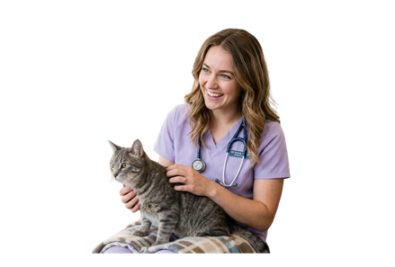

Consulta general
Evaluación clínica para revisar síntomas, hábitos y estado general de salud.
Veterinaria local para perros y gatos
Consultas, vacunación, desparasitación y atención preventiva para perros y gatos. Agenda tu cita por WhatsApp de forma rápida y sencilla.
Atención cercana, orientación clara y cuidado responsable.

Servicios
Evaluación clínica para revisar síntomas, hábitos y estado general de salud.
Planes de vacunación para proteger a tu mascota según su edad y estilo de vida.
Control interno y externo con orientación sobre frecuencia y prevención.
Seguimiento periódico para detectar cambios y mantener rutinas saludables.
Recomendaciones alimentarias según peso, etapa de vida y necesidades especiales.
Higiene, revisión de piel, oídos y recomendaciones de cuidado en casa.
Beneficios
Escuchamos tus dudas y revisamos cada caso con calma.
Coordina horarios por WhatsApp sin procesos complicados.
Priorizamos hábitos y controles para evitar problemas mayores.
Te explicamos recomendaciones y próximos pasos sin tecnicismos.
Nosotros
Patitas Care es una clínica veterinaria ficticia pensada para familias que buscan orientación profesional, trato amable y atención preventiva para perros y gatos.
Agenda
Cuéntanos qué necesita tu mascota y comparte tus horarios disponibles.
Validamos el mejor espacio para consulta, vacuna o control preventivo.
Recibes la confirmación y las indicaciones para llegar preparado.
Testimonios
"Nos explicaron todo con mucha claridad y Luna estuvo tranquila durante la consulta."
María Gómez"Agendar por WhatsApp fue rápido. Me ayudaron con el esquema de vacunas de Bruno."
Andrés Rojas"Me gustó el enfoque preventivo y las recomendaciones sencillas para casa."
Camila TorresFAQ
Puedes escribirnos por WhatsApp y te ayudamos a encontrar el horario disponible más conveniente.
Sí, atendemos perros y gatos en consulta general, prevención, vacunación y orientación básica.
Ofrecemos consulta general, vacunación, desparasitación, control preventivo, nutrición y cuidado básico.
Trae el carné de vacunas, información sobre alimentación, medicamentos actuales y cualquier síntoma observado.
Sí, puedes escribirnos primero para orientación inicial y para confirmar si tu mascota necesita una cita presencial.
Contacto
Escríbenos para resolver dudas, consultar disponibilidad o iniciar el proceso de agenda.
WhatsApp: +57 300 111 2233
Horario: Lunes a sábado, 8:00 a.m. - 6:00 p.m.
Ubicación: Clínica local ficticia, Colombia